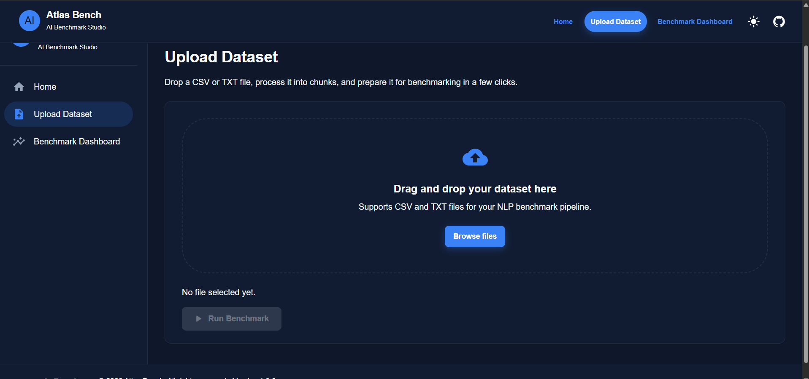
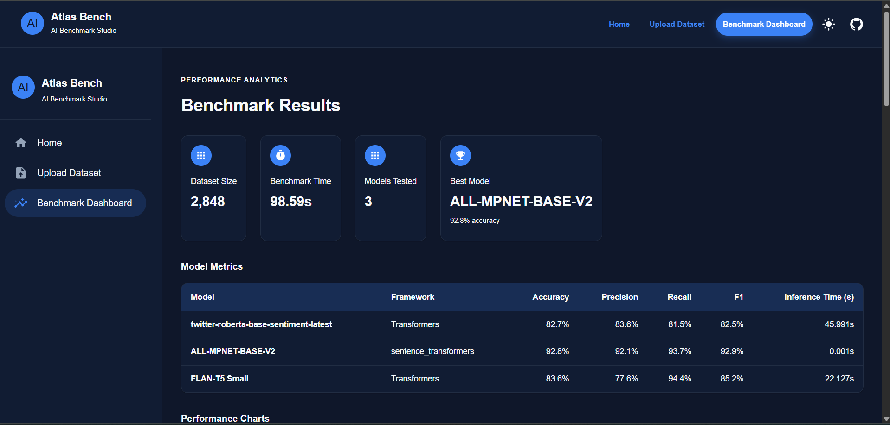
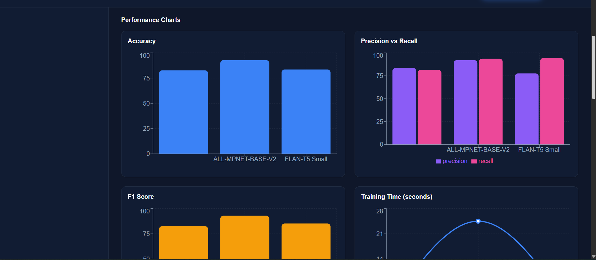
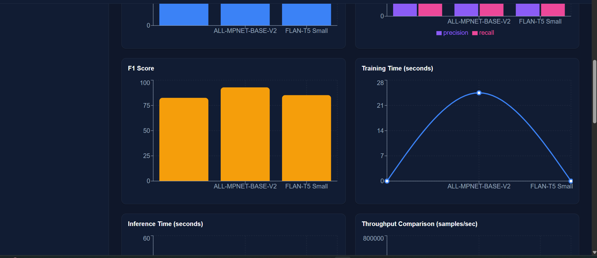
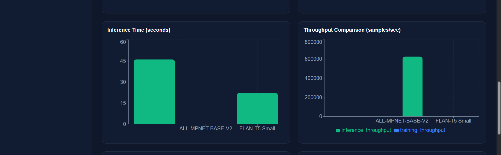
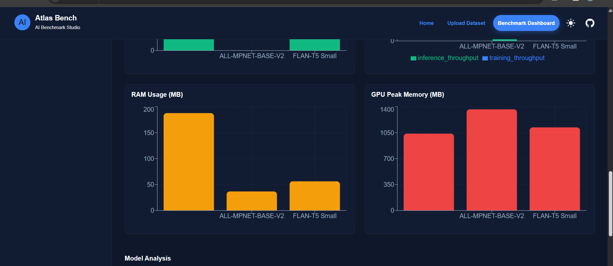

Core Engine Features
Dynamic Datasets
Upload and process custom CSV configurations with completely automated structural text token processing.
Hardware Profiling
Continuous internal profiling tracking fine-grained host RAM allocations and GPU memory utilization.
Inference Auditing
Measures precise model training velocities, system execution delays, and raw sample throughput frequencies.
Analytical Charts
Renders live validation matrices including interactive confusion grids and Precision/Recall/F1 distribution trends.
Model Support Matrix
| Model Variant | Architecture Classification | Deployment Strategy |
|---|---|---|
| SentenceTransformer + LogReg | Embedding-based Classifier | Implemented Baseline |
| CardiffNLP Twitter RoBERTa | Fine-tuned Transformer Core | Implemented Core |
| FLAN-T5 Small | Generative Sequence LLM | Implemented Core |
Evaluation Metrics Tracked
Accuracy
Precision
Recall
F1 Score
Training & Inference Velocity
Sample Throughput / Sec
Visual Interface/Metrics Galleries





